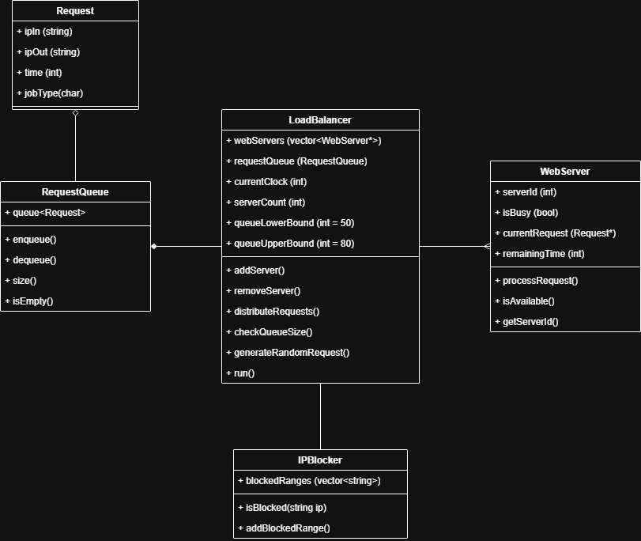
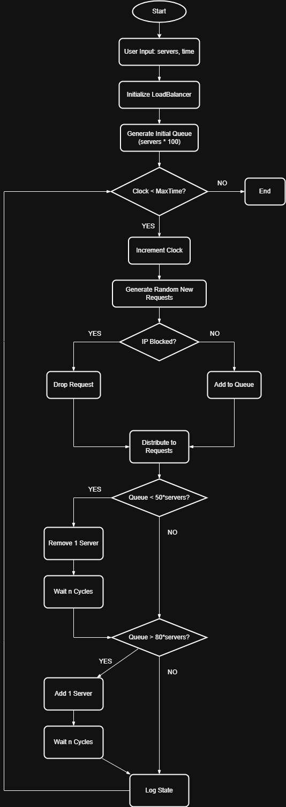

This diagram illustrates the class structure and relationships in the system.
The Request class contains incoming web requests and holds 4 attributes including ipIn, ipOut, time, and jobType. This class also includes basic getter and setter methods for these attributes.
The WebServer class represents each server that processes requests. Each instance of WebServer has it's own unique serverId, isBusy boolean flag, a pointer to the currentRequest being processed, and remainingTime. This class also includes methods to process requests, check availability, and manage its processing state.
The RequestQueue class uses a queue data structure to hold requests that are waiting to be processed. It provides methods to enqueue new requests, dequeue requests for processing, size(), and check if the queue is empty.
The LoadBalancer class maintains a collection of WebServer potiners, tracks currentClock, manages the RequestQueue, and monitors serverCount. It includes methods to add and remove servers based off of queue size, distribute incoming requests to available servers, and advance the simulation clock. This class is responsible for running the entire system.
The IPBlocker functions as a firewall by maintaining a list of blocked IP address ranges and checks if an incoming request's IP address is within any of those blocked ranges. It includes methods to add and remove IP blocks, and a method to check if a given IP address is blocked to prevent DOS attacks.
In this diagram that represents our system architecture, the load balancer owns and manages request queues and has a relationship with multiple web servers. The request queue also holds multiple request objects. The load balancer utilizes the IPBlocker to filter requests before adding them to the queue.

This diagram shows the flow of data and processes throughout the application.
After initially receiving user input for number of servers and max simulation time in clock cycles, the system initializes LoadBalancer and generates an initial queue that is populated with servers * 100 requests.
The main loop of this flow represents each iteration (one clock cycle). The clock is incremented and a the system generates new random requests to simulate real world traffic. With each generated request, the IP blocker checks if the source IP address falls within a blocked range. If it is, the request is discarded and if the IP passes, the request is added to the RequestQueue for processing.
The load balancer then checks for available servers and distributes requests from the queue to those servers. Each server processes its assigned request, and if a request's processing time is completed, the server becomes available again to take on new requests.
The system will continue to log significant events. At the end of each cycle, the current state is recorded. This entire workflow diagram represents a load balancer system that keeps queue size in a target range of 50-80 requests per server by dynamically adding and removing servers based on the current load, while also protecting against DOS attacks through IP blocking. The flow diagram captures the interactions between the load balancer, request queue, web servers, and IP blocker as they work together to manage incoming traffic efficiently.
